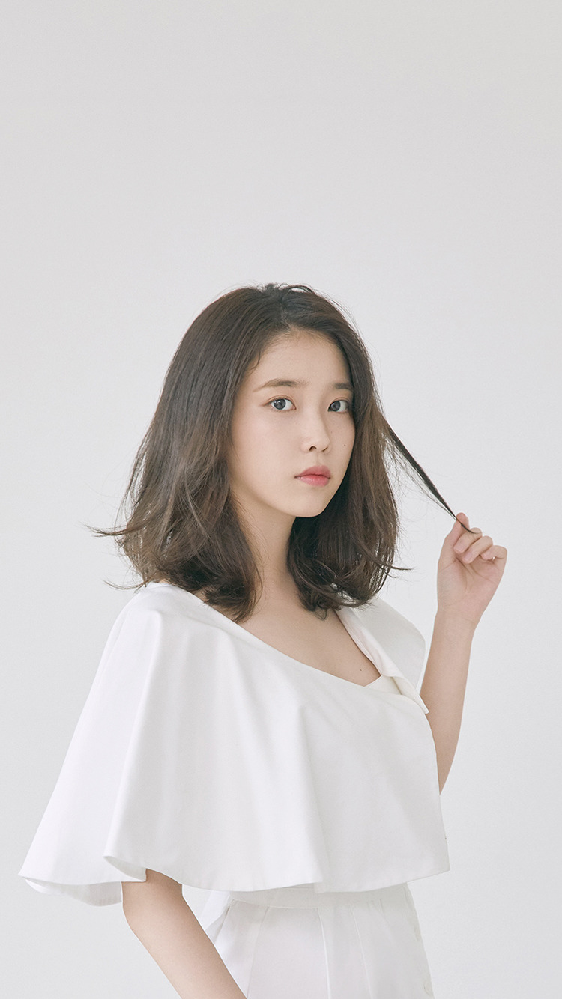

아이유-Palette
아이유가 기존에 시도해보지 않은 장르의 감각적이면서도 포근한 신스팝 R&B 트랙이다. 2년 전에 발매했던 '스물셋'과는 다른 듯, 또 이어지는 아이유 본인에 대한 이야기를 차분히 담아내고 있다.
‘스물셋’에서는 동시에 함께 존재하는 전혀 다른 이면과 그 혼란스러움을 솔직하고 대담하게 풀어놨다면 이번에는 헷갈리지 않고 본인이 좋아하는 것을 또박또박 짚어내며
”이제 날 조금 알 것 같다”고 이야기하는 아이유의 여유가 돋보인다.
더욱이 G-DRAGON의 피쳐링으로 이 이야기는 단순히 아이유 개인만의 것이 아닌 스물다섯이라는 나이,
또는 청춘이 가지는 그 아름다움과 찬란함으로 주제가 확장된다.
진솔하면서도 날이 서지 않은 다정한 메시지가 부드러운 신스소리와 어우러져 살랑거린다.
이제는 좀 알 것 같아,
I like it, I am 25.
I got this.
I am truly fine
스물셋과 비슷하게 자신의 자전적 이야기를 담았다. 그런데 달라진 점이 있다면 스물셋은 마치 사춘기를 늦게 겪는 것처럼 대중들의 기대와 저도 모르겠는 자신에 대한 조금은 날카롭고 신경질적인 반응이 많았다.
무엇보다 스물셋의 아이유는 나도 내가 뭘 원하는 지 모르겠다라는 메시지와 자신의 인기에 따른 사람들의 섣부른 판단에 대하여 버거워 하는 이야기가 많이 나왔다.
나도 모르겠고 거짓말도 한 적 없는 데 한 쪽에 끼워 맞춰져 판단되는 것이 자조적으로 익숙하다고 말하는 것이 대표적.
